Overview
During the 2022 Shanghai lockdown, daily life depended on neighbours organising themselves. Side by Side gives a residential community one place for deliveries, group purchases, bartering and help.
Homepage
Delivery pickup and community updates.
Group purchase
Organise and track buying together.
Help center
Pets, the elderly, stranded travellers.
Exchange
Barter between neighbours.
Pickup locker
Safer, cleaner self-pickup.
Two months indoors
From March to May 2022 the city went from partial closures to a full lockdown. Buying food moved online, deliveries became scarce, and people far from home were stranded.
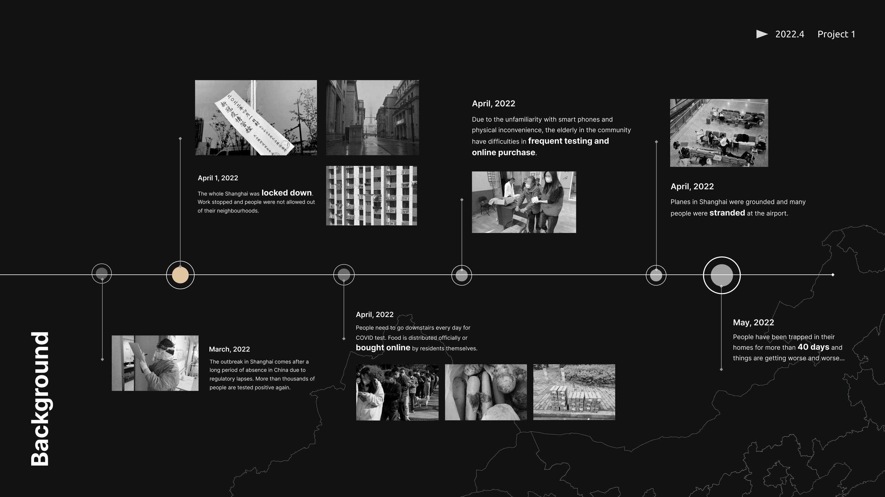
What residents struggled with
I interviewed residents and grouped what they told me into three areas of difficulty.
Hard to buy, hard to trust
High prices, few choices, confusing markets, and fear of contaminated deliveries.
Left out of online ordering
Older residents could not use the apps; volunteers were overloaded and disorganised.
No supplies, no plan
Pet food ran out, and nobody knew who would care for pets if owners were quarantined.
Two neighbours, two sets of needs
An older resident who lives alone and is new to smartphones, and a young pet owner — the two ends of the community the app has to serve.
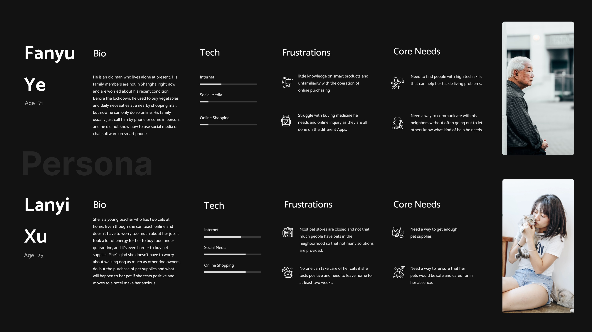
Needs people with tech skills nearby
Struggles with online purchasing and needs a simple way to ask neighbours for help.
Needs supplies and a backup for her pets
Wants a way to get pet supplies and to know her pets are safe if she has to leave.
Seven steps to one grocery order
Mapping a group purchase from being confined at home to picking up the package showed where the experience broke — and where the app could help.
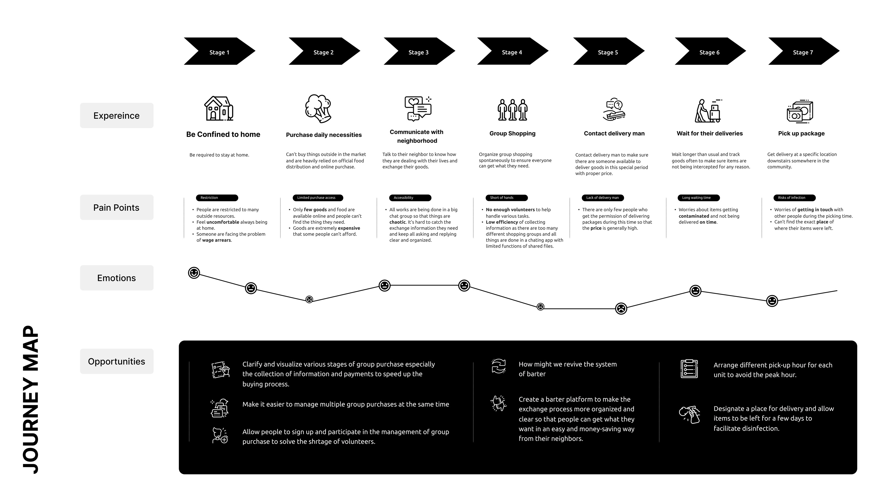
Information is scattered
Purchases are organised across chat groups and spreadsheets.
Nobody knows the status
Payment, delivery time and pickup are tracked by hand.
One place for the whole process
Collect, pay, track and pick up inside a single flow.
Side by Side.
A name and a mark for neighbours standing next to each other — and five “how might we” answers that became the app’s sections.
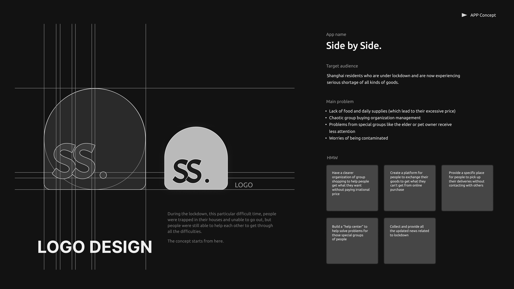
From wireframe to high fidelity
Structure first, in grey boxes; then colour, photography and the warm palette of the brand. Three screens from the group-purchase flow, before and after.
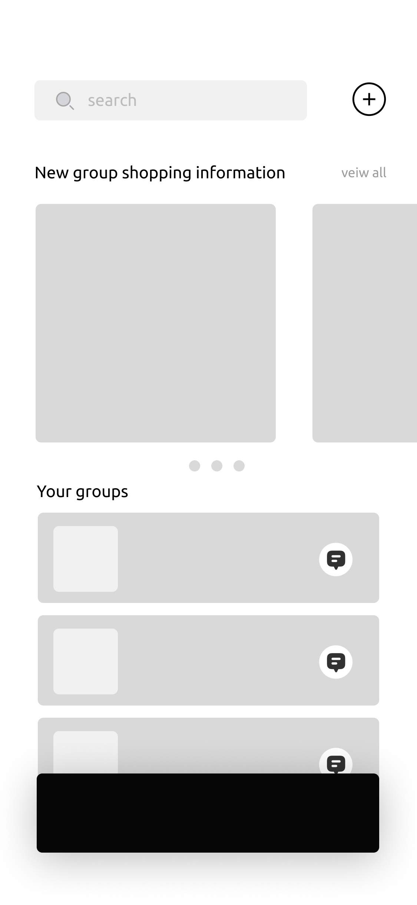
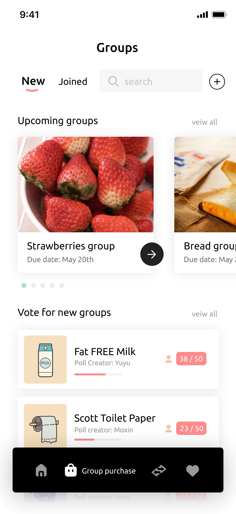
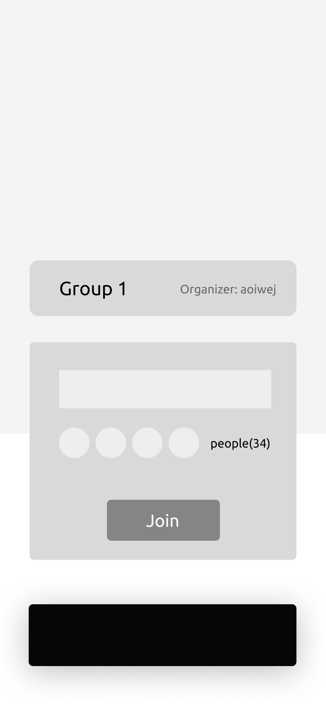
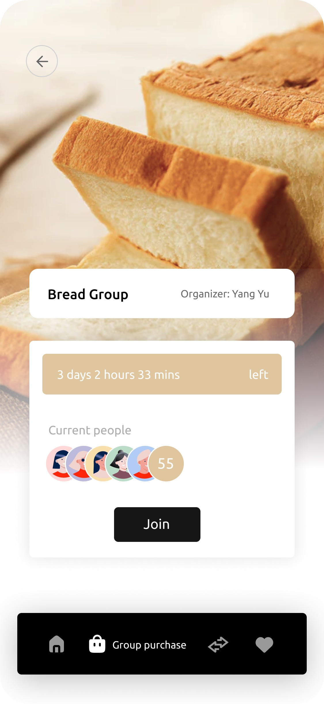
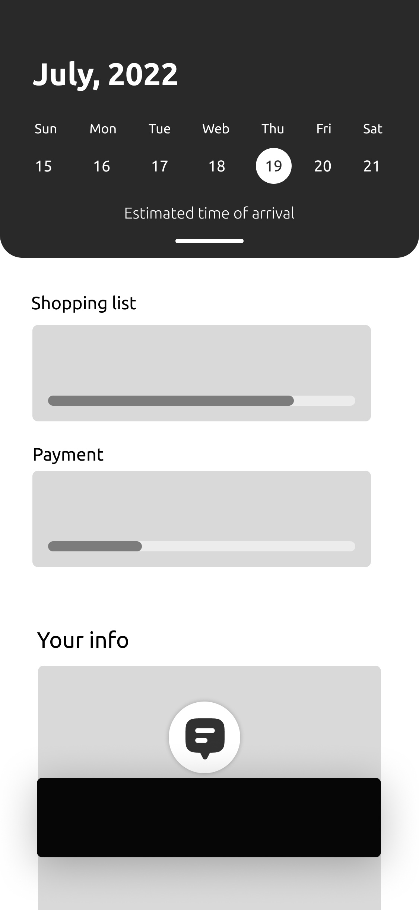
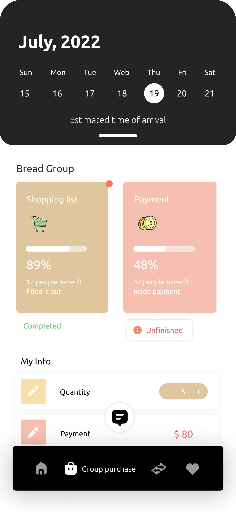
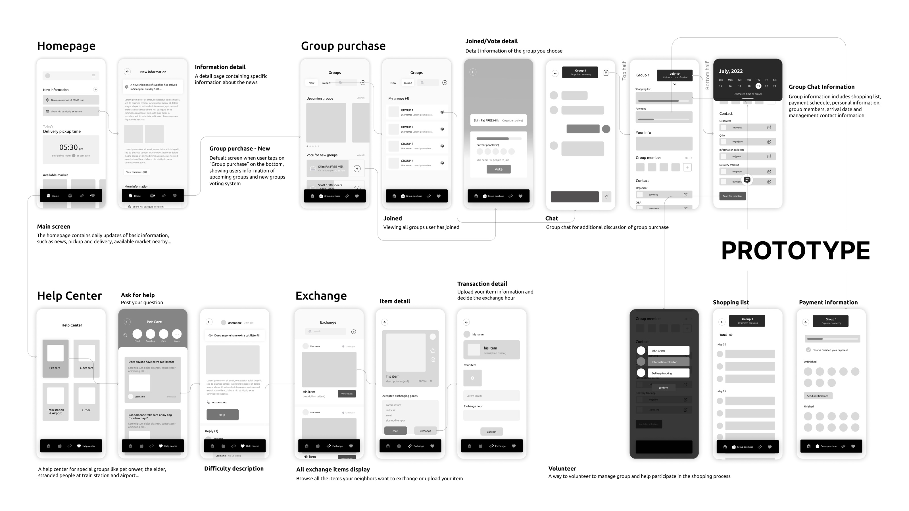
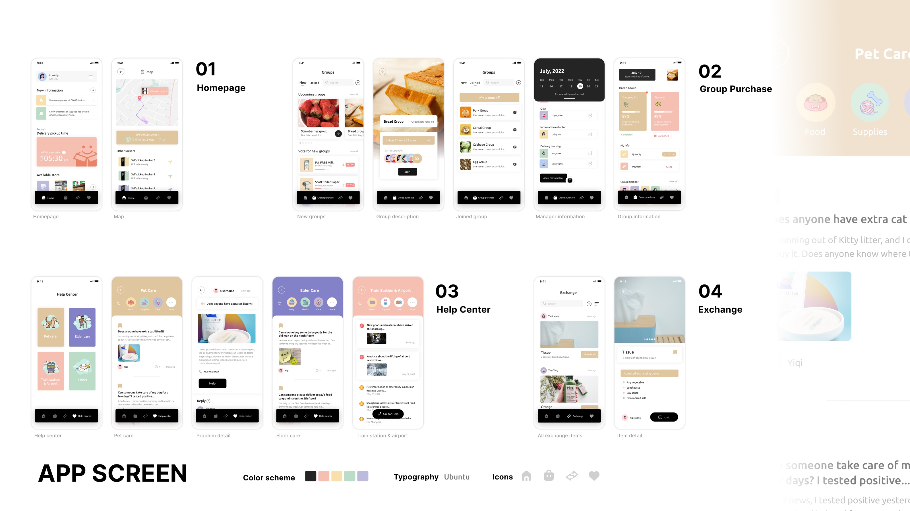
Four sections, screen by screen
Each section answers one of the problems residents described. Click a screen to see it in full.
Homepage
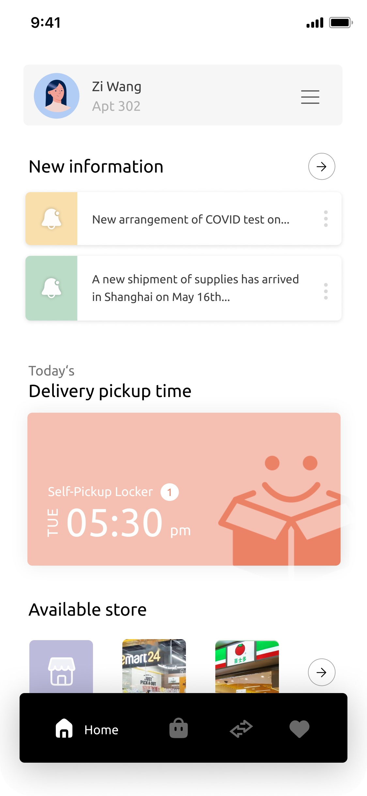
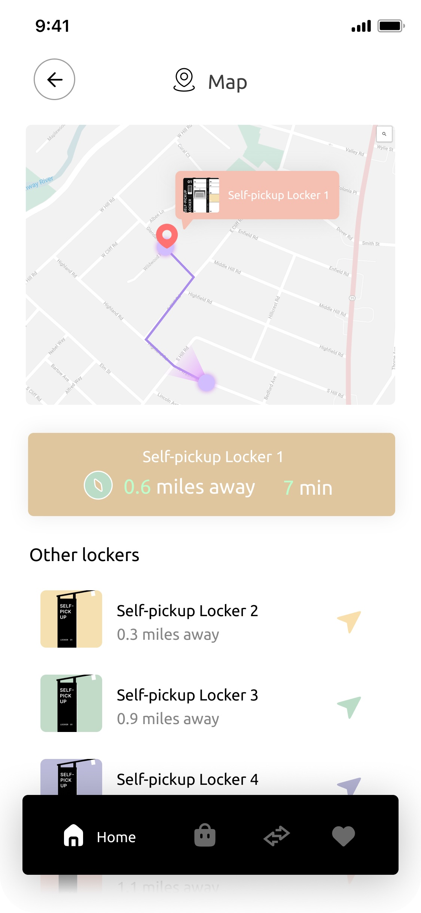
Today’s pickup time and community news come first, with the nearest self-pickup locker on a map.
Group Purchase
People can manage every step and detail of a group purchase, so everything is more organised.
Help Center
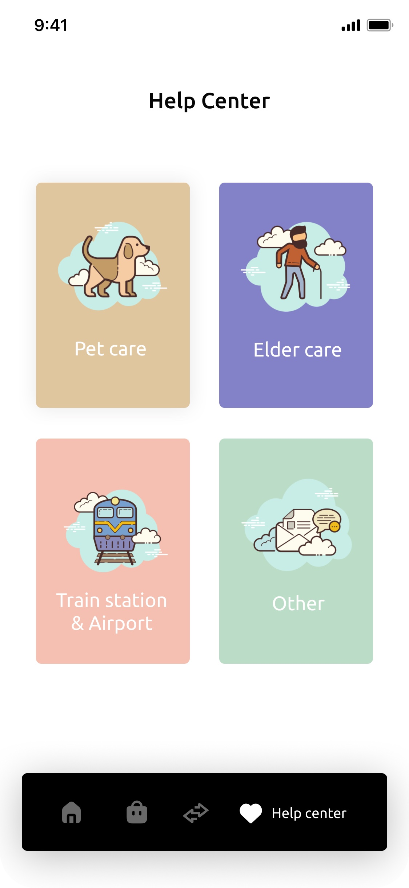
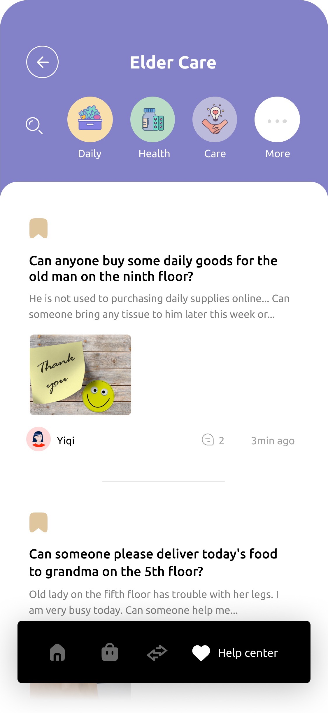
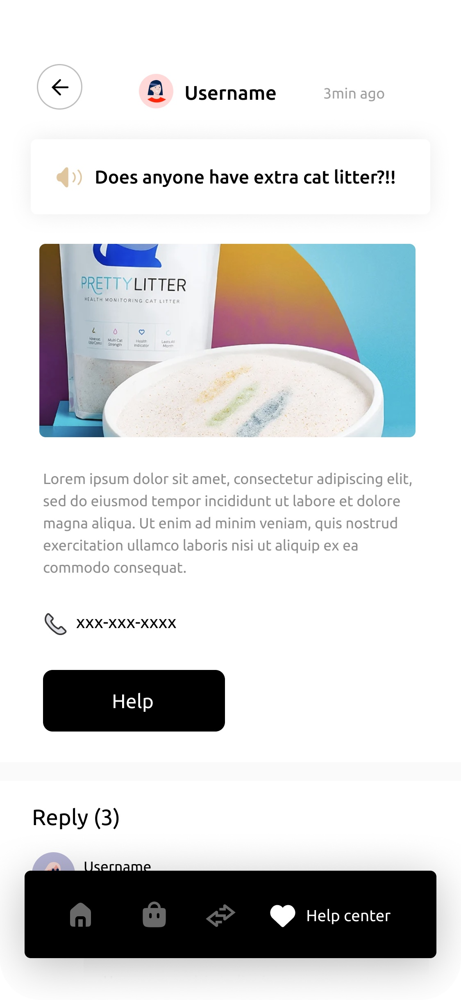
Pets, the elderly and stranded travellers each get a place to ask neighbours for help.
Exchange
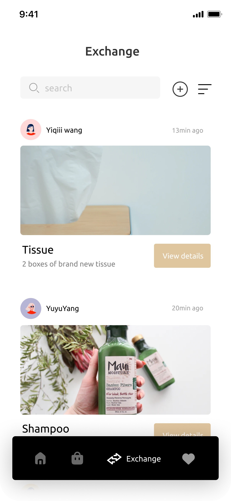
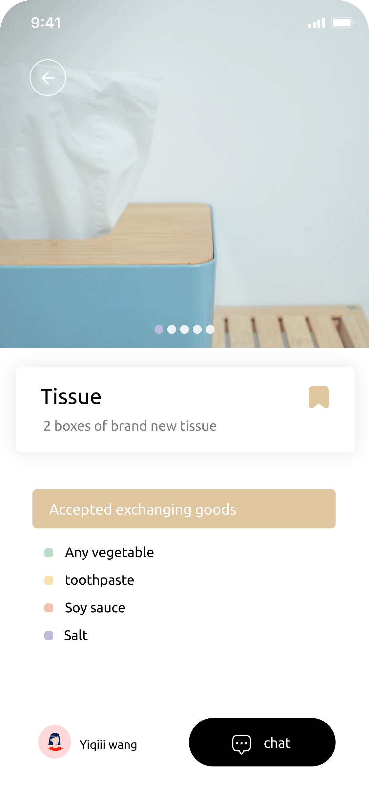
Neighbours barter what they have for what they need — no money involved.
A self-pickup locker
Testers asked for a contact-free way to collect deliveries. The locker lets residents pick up packages safely, and is opened from the app.